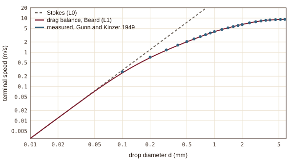
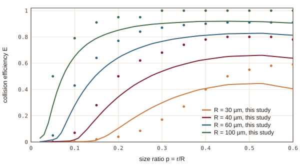
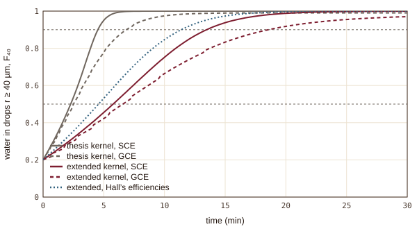
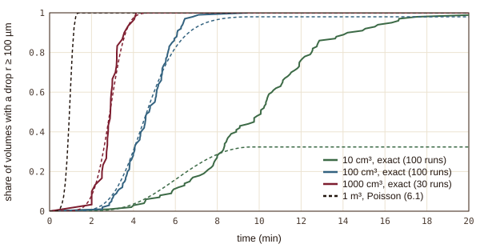

Bachelor thesis, Leipzig 2022 · rebuilt as lecture notes
cloud physics · stochastic collection · numerical methodsDroplet Collection
How cloud droplets become rain
A cloud droplet is ten micrometres across and sinks a centimetre a second; a raindrop holds a million of them. Gravity gathers them: a drop a little larger than its neighbours falls a little faster, overtakes the droplets below it and swallows some of them. These lecture notes rebuild Numa Koudsie’s Bachelor thesis, Collisional Ice Multiplication Processes in Clouds (Leipzig, 2022), from first principles, one physical effect at a time: Stokes’ drag derived from the stream function, a drag balance for every size, droplet trajectories around a falling drop, the energy that decides whether touching drops merge, the collection equation for a whole population, the exact random process behind it, turbulence, and ice. Every number not attributed to a source is computed by the model that runs in the page, and checked.
- 5.8 / 13.5 min
- to half and nine tenths of the water in drops above 40 µm; with the collision efficiency’s uncertainty, nine tenths at 10.5 to 13.5 min
- 1 min
- to the first drizzle drop in a cubic metre, ten times sooner than half the water: luck
- 50–1600×
- less new ice from ice–ice collisions than the thesis’s rule assumed
- 2.1 %
- largest fall-speed error against measurement, from 0.3 mm up
1.1The cloud and the three questions
The test case is the thesis’s warm cloud: \(300\ \mathrm{cm^{-3}}\) droplets around \(8\ \mathrm{\mu m}\) and \(1\ \mathrm{cm^{-3}}\) collectors around \(40\ \mathrm{\mu m}\), at \(10\,{}^{\circ}\mathrm{C}\) and \(850\ \mathrm{hPa}\), in a closed, well-mixed box. The notes ask how long until most of the water sits in large drops, how long until the very first drizzle drop appears in a given volume, and whether collisions in a cold cloud make new ice. A ladder of models answers them, each rung adding one effect with a computed number that shows it matters.
1.2What the rebuild found, one line each
- Fall speed. Stokes’ law breaks its own assumption at \(41\ \mathrm{\mu m}\), where its Reynolds number reaches 1. A drag balance through the Davies number matches the measurements of Gunn and Kinzer within 2.1 % from 0.3 mm up, and in the full population it slows growth by a factor 1.76, far more than for a single drop.
- Collision efficiency. Only a third of the droplets in a \(40\ \mathrm{\mu m}\) drop’s path touch it (\(E = 0.344\)); the rest ride round on the air it pushes aside. The trajectory solver reproduces the critical Stokes numbers \(1/12\) and \(1.21194\). The efficiency is the largest single change of the ladder, and the least certain: it moves the time to nine tenths of the water from 13.5 to 10.5 min.
- Coalescence. For cloud droplets the collision energy is \(10^{-5}\) of the surface energy, so touching drops merge; with Stokes speeds, large drops hit so hard that the thesis kernel stops merging them below a millimetre.
- Luck. The exact random process, sampled drop by drop in volumes up to a litre, makes the first \(100\ \mathrm{\mu m}\) drop through mergers of collectors with each other, in every one of 230 runs; a Poisson argument carries it to a cubic metre.
- Ice. At \(-10\,{}^{\circ}\mathrm{C}\) rime splintering is off, ice–ice breakup of the thesis’s small ice spheres makes almost nothing, and only the shattering of freezing drops could matter, between none and a few new particles per cm³ and minute: the measurements scatter that much.
1.3Four figures from the notes




1.4The project’s own pages
- SimulationThe collection equation, the droplet trajectories and an exact random cloud, running in your browser.
- Lecture notesTen chapters and an appendix, from one drop to ice: 22 numbered equations, each with its picture, its derivation and the model’s own numbers.
- ProblemsFive worked problems with the model’s numbers.
- ChecksExact solutions, independent recomputations in Python, and a script that finds every quoted number in the text.